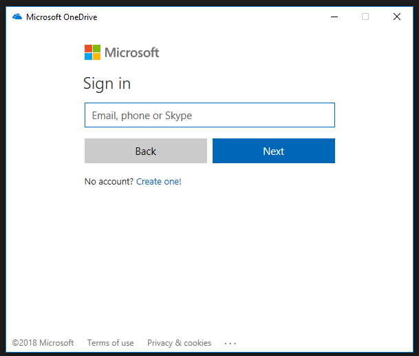

Posted on 6th February 2018
My new job came with a surprise: I get a Surface Pro with docking station as my work PC. This is actually very nice (I tend normally towards the "good enough" school of technology ownership). An Office365 subscription also comes with the job, and so 1TB (yes, a few years ago, a good hard-disk) of cloud storage from OneDrive for business.
Hmm, but... The Surface Pro only have GBs of free storage (thanks to a smallish SSD) and that's to be shared with applications I might want to install. But, surely, I can just sync the folders I want, and keep more in the cloud (swapping things about, perhaps, if needs be). Right? A bit of Internet searching suggests that, sure, that's an option. For normal consumer OneDrive. But not, it seems, for OneDrive Business. Until maybe mid-2018 when a new client comes out. YMMV of course.
I did find some instructions and downloads which can turn on hidden features in the consumer version of OneDrive (which you'll have automatically, if you are on Windows 10). Am I going to run random registry hacks on my new work PC? No... But it turns out the edits you need to mark are small, and easily reversible, and safe seeming. So here's a guide.
If you fire up OneDrive, it'll look a bit like this:

But you won't be able to input a work email.
Hit the windows key, and type regedit and enter to tune the "Registry Editor". You'll need some form of admin rights, I'm afraid. In the tree view on the left, navigate to, sucessively, "HKEY_CURRENT_USER" then "Software" then "Microsoft" and then "OneDrive". Now:
Close the registry editor
Initially, I this didn't work me. I quit, and restarted, OneDrive, but no luck.